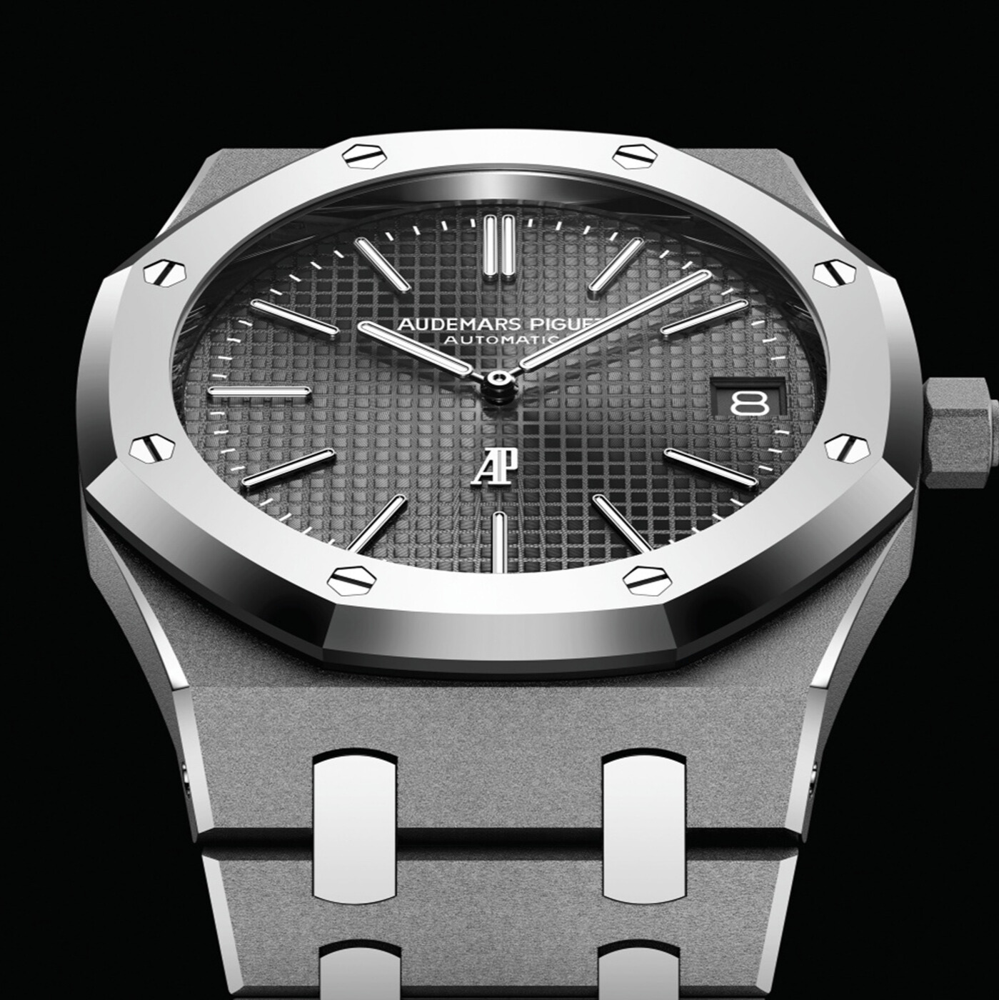

Audemars Piguet Royal Oak ref. 5510ST
Wstęp
Zegarek 50th anniversary Audemars Piguet Royal Oak 41mm ref. 5510ST to prawdziwe dzieło sztuki, które odzwierciedla mistrzowskie kunszt, precyzję i doskonałość szwajcarskiego zegarmistrzostwa. Ten wyjątkowy zegarek został stworzony z okazji 50. rocznicy premiery kultowej kolekcji Royal Oak marki Audemars Piguet, która zrewolucjonizowała świat zegarmistrzowski w 1972 roku. Pierwszym wrażeniem, jakie towarzyszy po obejrzeniu zegarka 50th anniversary Audemars Piguet Royal Oak 41mm ref. 5510ST, jest jego niezwykła elegancja i prestiż. Zegarek ten został wykonany z najwyższej jakości materiałów, w tym ze stali nierdzewnej oraz tytanu, co gwarantuje jego wytrzymałość i trwałość. Dla fanów marki Audemars Piguet i kolekcji Royal Oak szczególną atrakcją będzie bez wątpienia wyjątkowe wykonanie tarczy zegarka. Zegarek ten ma srebrną tarczę z motywem Grande Tapisserie w odcieniach niebieskiego, co nadaje mu niepowtarzalnego charakteru. Oznaczenia godzin są wykonane z białego złota, a wskazówki pokryte białą masą luminescencyjną, co ułatwia odczytanie czasu w ciemności.

Mechanizm
Wnętrze zegarka to jedna z tych rzeczy, która fascynuje każdego prawdziwego pasjonata zegarków. To, co kryje się pod lśniącą tarczą i elegancką kopertą, może być prawdziwym dziełem sztuki inżynieryjnej. Jednym z takich zegarków, które wzbudzają zachwyt wśród miłośników zegarków, jest model 50th anniversary Audemars Piguet Royal Oak 41mm ref. 5510ST. To niezwykłe dzieło szwajcarskiego zegarmistrzostwa zachwyca nie tylko swoim wyglądem, ale także wnętrzem, które tchnie życiem w to niezwykłe urządzenie. Zegarek ten jest wyposażony w mechanizm z automatycznym naciągiem, co oznacza, że jego ruch jest napędzany ruchami ręki użytkownika. To znaczy, że zegarek pozostaje zawsze gotowy do pracy, bez konieczności częstego nakręcania. Dzięki temu zapewnia nie tylko niesamowitą precyzję, ale także wygodę użytkowania. Jednak to nie koniec fascynujących aspektów wnętrza tego zegarka. Mechanizm tego modelu posiada także funkcję chronografu. Co to oznacza? To oznacza, że można mierzyć czas z niesamowitą precyzją, aż do 1/4 sekundy. To przydaje się nie tylko w codziennym życiu, ale także w różnych aktywnościach sportowych, gdzie dokładność pomiaru czasu jest kluczowa. To wnętrze zegarka to prawdziwy majstersztyk zegarmistrzów Audemars Piguet, którzy przeznaczyli ogromny wysiłek i precyzję, aby stworzyć coś, co nie tylko zachwyca oko, ale także spełnia najwyższe standardy jakości i wydajności. Każdy element tego mechanizmu jest precyzyjnie dopracowany i dopieszczony, co sprawia, że zegarek ten to nie tylko narzędzie do mierzenia czasu, ale także dzieło sztuki i inżynierii. Warto docenić to, co kryje się wewnątrz tego zegarka, ponieważ to tam tkwi jego prawdziwa dusza.
Podsumowanie
Zegarek 50th anniversary Audemars Piguet Royal Oak 41mm ref. 5510ST to zegarek dla miłośników zegarmistrzostwa i pięknych rzeczy. Jego unikalne połączenie tradycji i innowacji sprawia, że jest to jedno z najbardziej pożądanych zegarków na świecie. To prawdziwy klejnot dla każdej kolekcji i niezwykła okazja dla każdego miłośnika marki Audemars Piguet, by mieć coś niezwykłego na swoim nadgarstku.